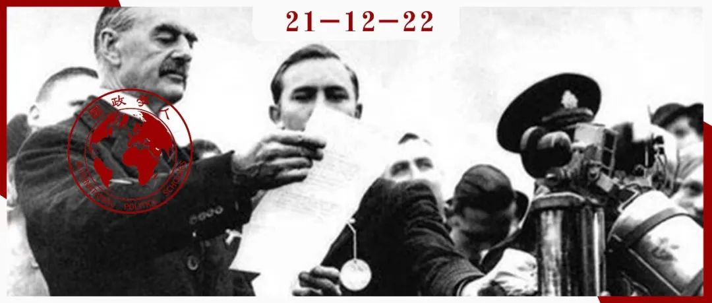

收录于合集
#《国际关系前沿》2021年第12期 22 个
#理论研究 96 个

作品简介
作者： Norrin M. Ripsman，理海大学国际关系系教授，宾夕法尼亚大学博士，研究兴趣包括安全的政治经济学、国际关系理论与新古典现实主义。Jack S. Levy，罗格斯大学政治学教授，威斯康星大学麦迪逊分校政治学博士，曾任国际研究协会(ISA)第四十七任（2007-2008）主席，研究领域包括战争起因、对外政策分析、定性研究方法与政治心理学。
编译： 王川（国政学人编译员，复旦大学国际关系与公共事务学院硕士研究生）
来源： Ripsman, N. M., & Levy, J. S. (2008). Wishful thinking or buying time? The logic of British appeasement in the 1930s. International Security , 33 (2), 148-181.
归档： 《国际关系前沿》2021年第12期，总第39期。

内容摘要
学者们通常将绥靖定义为一种通过单方面让步来满足对手的不满，以避免在可预见的未来发生战争的政策，是制衡的一种替代方案。英国在20世纪30年代对德国的绥靖政策一般被解读为通过满足希特勒的不满来维持与德国和平关系的天真尝试。然而，绥靖政策的概念化与实证研究在理论上存在不足，与历史存在出入。绥靖是一种持续、不对称的让步策略，其目标是至少在短期内避免战争。存在三种不同类型的绥靖政策：第一，化解不满（在可预见的未来避免战争）；第二，缓解次要威胁（关注更主要的威胁）；第三，争取时间（重整军备或保护盟友免受当前威胁）。英国的绥靖政策主要是为重整军备应对德国争取时间。英国领导人认识到了德国日益增长的威胁，并不指望绥靖能够避免最终与德国的战争。他们认为，直到1936年的莱茵兰危机时，力量平衡已向有利于德国的方向倾斜，但英国可以通过重整军备在30年代末期扭转此失衡。绥靖是一种旨在推迟与德国的预期对抗，直到军事平衡更加有利于己的策略。
文章导读
01
绥靖政策的类型学
本文将绥靖定义为 一种为应对威胁而制定的持续、不对称的让步策略，其目标是至少在短期内避免战争 。该定义与传统的界定相比具有几点优势。通过强调让步是持续和不对称的，该定义将绥靖政策与其他涉及某种形式让步的谈判策略相区分。例如，在“一报还一报（tit- for- tat）”策略中，当且仅当对手予以回报时，初始的合作才会重复出现。如果对手予以回报、每一方都选择继续合作，那么让步将会持续。但这种让步是对称性的，因此不是绥靖。绥靖策略是基于对对手行为的预期，即对手很可能不会以同等价值的让步来回报己方做出的让步。
基于更为具体的目标和手段，本文区分了绥靖策略的三种类型：化解不满、缓解次要威胁与争取时间。
第一， 化解不满 。第一种绥靖模式是期待以向对手做出实质性、不对称的让步的方式来化解不满，并在可预见的未来避免战争。这种化解不满的策略是制衡的一种替代方案。关于绥靖政策的传统定义与对英法两国20世纪30年代行为的传统解读体现了此模式。
第二， 缓解次要威胁 。此类绥靖模式通常由面临多重威胁且资源有限的国家使用，体现为向威胁较小的对手做出广泛让步，来最大限度地成功威慑或防御威胁较大的对手。与化解不满类似，缓解次要威胁也涉及到与对手和解以避免战争，但其主要动机是使国家在与另一对手的潜在冲突中处于更有利的地位。因此，此模式涉及到安抚一个对手以促成对另一对手的制衡。
可以进一步将“缓解次要威胁”划分为三种子类型。一是 “资源节约”策略 ，即绥靖实施国向次要对手做出广泛让步，节省资源用于对抗主要对手。例如，19世纪晚期英国对美国的绥靖政策，其动机在于预期到德国对英国的威胁将日益加剧。二是 “反对结盟”策略 ，即安抚次要对手，防止其与主要对手结盟或给予其军事支持。例如，在意大利入侵埃塞俄比亚之后，英国领导人试图安抚墨索里尼，希望意大利保持与德国的距离。三是 “威胁转向”策略 ，即安抚次要对手，将其敌意转向主要威胁国，这是第二种子模式的更高级版本。例如，在苏联看来，英法两国在慕尼黑会议上的行为是意在打击苏联。
第三， 争取时间 。与前两种绥靖模式不同，“争取时间”策略并不假定广泛的让步会永久化解不满并实现持久和平。相反，其目的是暂时分散威胁，并在短期内避免战争，从而通过争取时间在国内重整军事力量或确保盟友对抗外部威胁以实现长期的制衡。领导人大概会把满足对手的不满并避免战争视为一种理想结果，但他们也承认这是不可能的。
如果领导人认识到时间对己方有利、预期双方的力量平衡会向己方倾斜、认为能够比对手更好地利用敌对行动的延迟，那么他们最有可能采取争取时间的策略。他们期望改变的不一定是对手的不满情绪，而是对手实施威胁并在军事对抗中获胜的能力。此外，如果领导人认为对手的威胁消失（即使在未发生力量对比变化的情况下），那么他们也可能采取争取时间的策略。这种威胁消失可能是因为敌对国家的新领导人或新政权上台，或是因为新威胁的出现导致对手转移了原有的注意力。
虽然本文将争取时间和消除次要威胁描述为绥靖政策的模式，但这些策略也可以在没有绥靖性质的不对称让步中使用。另一种可以与绥靖政策进行结合但本文并未将其归类为绥靖的策略是“信号甄别（diagnostic signaling）”。该策略体现为向对手让步，诱导对手做出可能表明其意图的行为。对手的反应是相互让步还是升级其要求提供了有关对手的宝贵信息。然而，该策略几乎总是伴随着单次或有限的让步，而不是一种持续、不对称的绥靖策略。一旦对手显露出敌意，那么实施国就可能改变其温和策略。
02
英国在20世纪30年代的绥靖政策
如果将英国的绥靖政策解读为传统观点的化解不满是正确的，那应该有证据表明，英国领导人一贯认为德国的战争目标是有限的，相信让步可以解决双边分歧，因此也没有预料到英德之间会发生战争。相反，如果争取时间的解读是正确的，应该有证据表明，英国领导人认为让步可能不会缓和德国的侵略计划，未来仍可能会爆发战争，力量平衡暂时有利于德国，因此推迟军事行动将为重整军备赢得时间。英国在对德国做出外交让步的同时，也在努力增加军备、确保盟友安全，并为战争做准备，也应在事实证据上得到支撑。作者系统考察了四个不同绥靖阶段的证据：希特勒上台至1935年德国宣布征兵和重整军备；1936年的莱茵兰危机；张伯伦政府初期（1937年）与1938年的捷克斯洛伐克危机。
英国的相对衰落与德国的崛起给英国决策者带来了严重的战略困境。他们了解并害怕德国带来的挑战，但认为英国有限的军事力量与脆弱的经济阻止了他们在（英国）形势好转之前对德国采取强硬政策。由于公众舆论要求解除武装、一战带来巨大经济损失与经济大危机爆发等原因，英国军队在20世纪30年代对战争毫无准备。这使得连续三任首相——拉姆齐·麦克唐纳、斯坦利·鲍德温与张伯伦得出结论，在开始重整军备计划的同时，向德国进行战略让步，满足德国的短期野心，并为英国重整军备争取时间。1935年，英国开始重整军备，并在莱茵兰危机期间加速了这一计划。
03
结论
英国的绥靖政策并非传统观点假定的试图通过化解德国的不满来确保持久和平。相反，它的目的是为重整军备争取时间，这是基于以下几种认知：力量平衡已向有利于德国的方向倾斜；对德国的广泛让步无法满足希特勒，无法缓和他的侵略性政策，也无法消除未来军事对抗的高风险；通过逐步重整军备，英国将在几年内更好地准备对抗德国。张伯伦与哈利法克斯期望从绥靖政策中得到的真正回报是推迟战争的爆发，为重整军备争取时间，使英国在军事上更加强大、更加安全，遏制德国未来的挑战，或者是以更有利的条件进行战争。因此，对英国来说， 绥靖是对重整军备与制衡策略的补充，而不是替代 。尽管英国当时的政策选择可能是糟糕的，但这是由对战略力量平衡的评估，而不是由安抚德国的一厢情愿的想法驱动的。
本文对20世纪30年代英国绥靖政策这一范例的研究表明， 争取时间是英国对德政策的主要动机 。传统的绥靖概念，即满足不满、缓解紧张局势以避免战争是片面的，忽视了缓解次要威胁与争取时间两种重要模式。总之，学者们需要拓宽传统的绥靖概念。未来的研究可以关注此类绥靖模式的相对频率、效用及其与国家面对崛起大国时可供使用的其他政策工具的关系。
译者评述
本文反思了对绥靖政策的传统解读，指出绥靖并不总是满足对手野心、谋求持久和平的天真尝试。作者将绥靖政策划分为三种类型，通过对英国在20世纪30年代的绥靖政策进行系统的经验分析，强调争取时间是英国实施绥靖的主要动机。绥靖能够帮助面临多重威胁的国家分散次要威胁，能为在力量对比上处于弱势的一方扭转不利地位争取时间，对于绥靖政策的进一步分析有助于完善对该策略的概念化与理论化。同时，传统观点一般认为绥靖政策会危及国家安全。本文也强调从后果上来说英国的绥靖政策是失败、糟糕的，但作者关注到了英国选择绥靖的理性一面，即绥靖是力量对比对手占优下的“缓兵之计”，是源于对敌我力量对比的评估。很多学者同样对绥靖政策的成因进行了理论上的分析。例如，丹尼尔·特雷斯曼（Daniel Treisman）强调“理性绥靖”，认为对于面临多重潜在挑战的资源有限的行为体来说，选择性绥靖是理性的。【1】罗伯特·鲍威尔（Robert Powell）指出，英国在20世纪30年代面临着一个非常复杂的战略难题，衰落国不确定崛起国的目标是有限的还是无限的，在均衡状态下，衰落国通常会对崛起国做出一系列的让步。【2】
参考文献
[1] Treisman, D. (2004). Rational appeasement. International Organization, 58(2), 345-373.
[2] Powell, R. (1996). Uncertainty, shifting power, and appeasement. American Political Science Review , 90(4), 749-764.
词汇整理
一报还一报 tit-for-tat
绥靖 appeasement
莱茵兰危机 Rhineland crisis
审校 | 杨佳霖 姚博闻
排版 | 贾希铭 臧泽华
文章观点不代表本平台观点，本平台评译分享的文章均出于专业学习之用, 不以任何盈利为目的，内容主要呈现对原文的介绍，原文内容请通过各高校购买的数据库自行下载。

国政学人
支持学术公益与知识传播
微信扫一扫赞赏作者 __赞赏
已喜欢，对作者说句悄悄话
取消 __
发送给作者
发送
最多40字，当前共字
上一页 1/3 下一页
长按二维码向我转账
支持学术公益与知识传播
受苹果公司新规定影响，微信 iOS 版的赞赏功能被关闭，可通过二维码转账支持公众号。